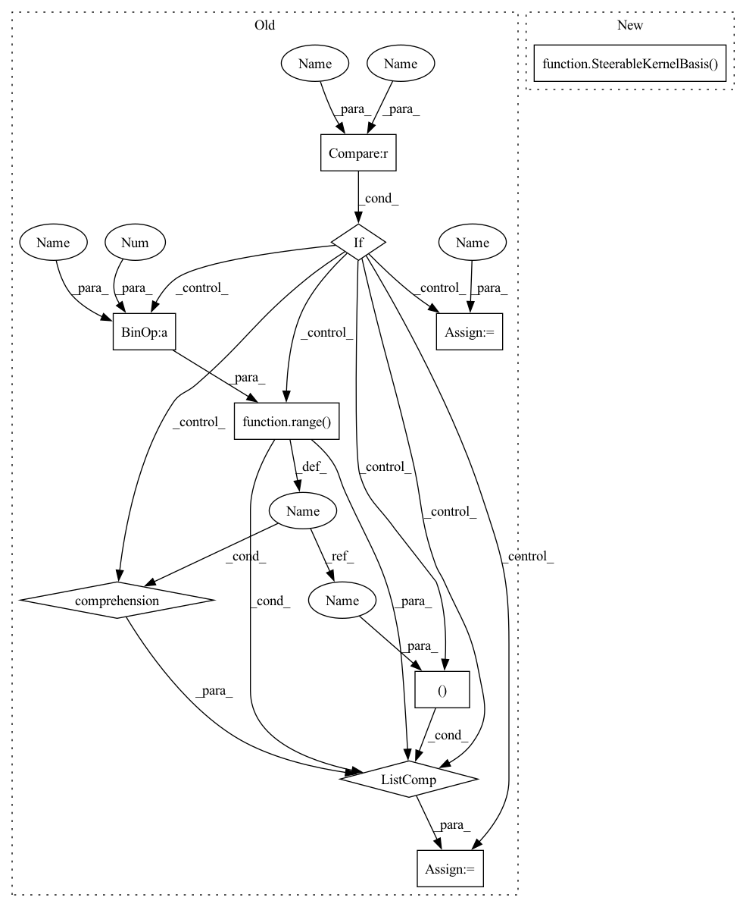

Pattern ID :27562

Before Change
group = in_repr.group
assert isinstance(group, O2)
if maximum_frequency is not None:
harmonics = [(0, 0)] + [(1, l) for l in range(maximum_frequency+1)]
else:
harmonics = None
angular_basis = SteerableKernelBasis(CircleO2(axis), in_repr, out_repr, WignerEckartBasis, harmonics=harmonics)
radial_profile = GaussianRadialProfile(radii, sigma)
After Change
radial_profile = GaussianRadialProfile(radii, sigma)
basis = SteerableKernelBasis(
CircularShellsBasis(maximum_frequency, radial_profile, filter=filter, axis=axis),
in_repr, out_repr,
WignerEckartBasis,
)
if adjoint is not None and not np.allclose(adjoint, np.eye(2)):
assert adjoint.shape == (2, 2)
basis = AdjointBasis(basis, adjoint)
In pattern: SUPERPATTERN
Frequency: 3
Non-data size: 10
Instances
Fragment ID: 81878165
Project Name: quva-lab/escnn
Commit Name: 0f92512786f1d6658e6b9796043bedf457c0558b
Time: 2022-08-26
Author: gabriele.cesa@gmail.com
File Name: escnn/kernels/r2.py
M Class Name: AnonimousClass
N Class Name: AnonimousClass
M Method Name: kernels_O2_act_R2(8)
N Method Name: kernels_O2_act_R2(8)
M Parent Class:
N Parent Class:
M File Name: escnn/kernels/r2.py
N File Name: escnn/kernels/r2.py
M Start Line: 104
M End Line: 112
N Start Line: 105
N End Line: 111
'>
Before Change
assert isinstance(group, SO3)
if maximum_frequency is not None:
harmonics = [(l,) for l in range(maximum_frequency+1)]
else:
harmonics = None
angular_basis = SteerableKernelBasis(SphereSO3(), in_repr, out_repr, WignerEckartBasis, harmonics=harmonics)
radial_profile = GaussianRadialProfile(radii, sigma)
After Change
radial_profile = GaussianRadialProfile(radii, sigma)
basis = SteerableKernelBasis(
SphericalShellsBasis(maximum_frequency, radial_profile, filter=filter),
in_repr, out_repr,
RestrictedWignerEckartBasis,
sg_id="so3"
)
if adjoint is not None and not np.allclose(adjoint, np.eye(2)):
assert adjoint.shape == (3, 3)
basis = AdjointBasis(basis, adjoint)
'>
Fragment ID: 81878164
Project Name: quva-lab/escnn
Commit Name: 0f92512786f1d6658e6b9796043bedf457c0558b
Time: 2022-08-26
Author: gabriele.cesa@gmail.com
File Name: escnn/kernels/r3.py
M Class Name: AnonimousClass
N Class Name: AnonimousClass
M Method Name: kernels_SO3_act_R3(7)
N Method Name: kernels_SO3_act_R3(7)
M Parent Class:
N Parent Class:
M File Name: escnn/kernels/r3.py
N File Name: escnn/kernels/r3.py
M Start Line: 82
M End Line: 90
N Start Line: 82
N End Line: 89
'>
Before Change
assert isinstance(group, SO2)
if maximum_frequency is not None:
harmonics = [(l,) for l in range(maximum_frequency+1)]
else:
harmonics = None
angular_basis = SteerableKernelBasis(CircleSO2(), in_repr, out_repr, WignerEckartBasis, harmonics=harmonics)
radial_profile = GaussianRadialProfile(radii, sigma)
After Change
radial_profile = GaussianRadialProfile(radii, sigma)
return SteerableKernelBasis(
CircularShellsBasis(maximum_frequency, radial_profile, filter=filter),
in_repr, out_repr,
RestrictedWignerEckartBasis,
sg_id=(None, -1)
)
def kernels_O2_act_R2(in_repr: Representation, out_repr: Representation,
'>
Fragment ID: 81878166
Project Name: quva-lab/escnn
Commit Name: 0f92512786f1d6658e6b9796043bedf457c0558b
Time: 2022-08-26
Author: gabriele.cesa@gmail.com
File Name: escnn/kernels/r2.py
M Class Name: AnonimousClass
N Class Name: AnonimousClass
M Method Name: kernels_SO2_act_R2(6)
N Method Name: kernels_SO2_act_R2(6)
M Parent Class:
N Parent Class:
M File Name: escnn/kernels/r2.py
N File Name: escnn/kernels/r2.py
M Start Line: 55
M End Line: 63
N Start Line: 56
N End Line: 63